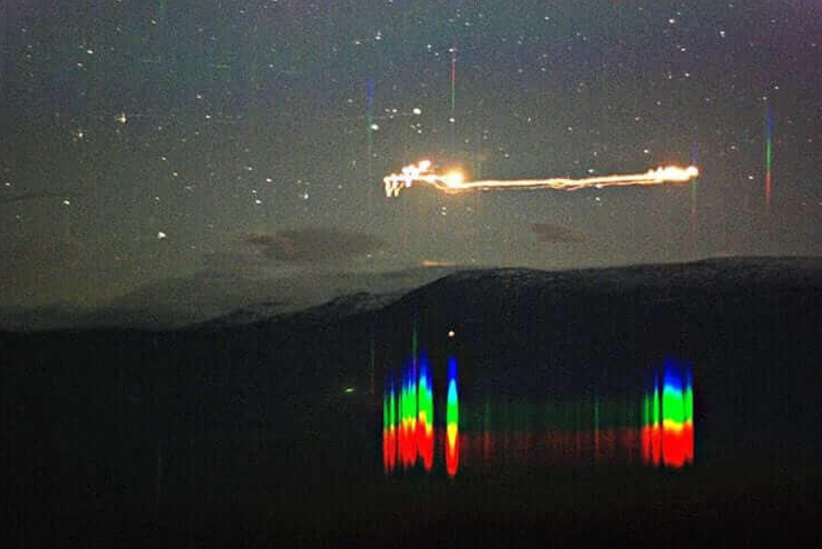

EPISÓDIO 04
EPISODE 04
As Luzes de Hessdalen
The Hessdalen Lights
Há décadas, testemunhas descrevem luzes estranhas num vale da Noruega. Os investigadores continuam à procura de respostas.
For decades, witnesses have reported strange lights in a Norwegian valley. Researchers continue searching for answers.
▶ TESTAR O PLAYER▶ TEST THE PLAYER
00:0000:12
Som de demonstração, não é o episódio. O MP3 verdadeiro será ligado após o envio para o R2.Demo sound, not the episode. The real MP3 will be linked after upload to R2.